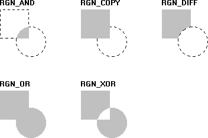

An application combines two regions by calling the CombineRgn function. Using this function, an application can combine the intersecting parts of two regions, all but the intersecting parts of two regions, the two original regions in their entirety, and so on. Following are five values that define the region combinations.
| Value | Meaning |
|---|---|
| RGN_AND | The intersecting parts of two original regions define a new region. |
| RGN_COPY | A copy of the first (of the two original regions) defines a new region. |
| RGN_DIFF | The part of the first region that does not intersect the second defines a new region. |
| RGN_OR | The two original regions define a new region. |
| RGN_XOR | Those parts of the two original regions that do not overlap define a new region. |
Â
The following illustration shows the five possible combinations of a square and a circular region resulting from a call to CombineRgn.

Â
Â